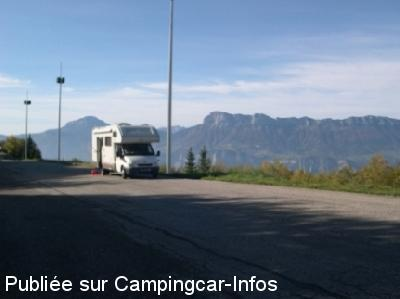

APN = Parking toléré jour/nuit de :
PRAPOUTEL LES SEPT LAUX
(N° 420)
Accès/adresse :
Parking Journée
Lieu dit Prapoutel Les Sept Laux
38 190 LES ADRETS
Lieu dit Prapoutel Les Sept Laux
38 190 LES ADRETS
Latitude : (Nord) 45.25758° Décimaux ou 45° 15′ 27′′
Longitude : (Est) 5.99738° Décimaux ou 5° 59′ 50′′
Tarif : Gratuit
Services :


Commerces et services à proximité
Autres informations :
WC et eau sur le parking de la station, très familiale.
Les pistes sont à 50 m par les escaliers.
http://www.les7laux.com

Le 31/10/2004 par Fama80
de
Po
le 02/04/2016 :
De passage ce 2 avril 2016, parking désert. Super pour passer une nuit, avec les commerces et les restaurants à proximité.
De passage ce 2 avril 2016, parking désert. Super pour passer une nuit, avec les commerces et les restaurants à proximité.
de
Isabelle
le 30/01/2006 :
Nous en revenons. Les camping-cars sont tolérés sur le "parking journée". Parking plat, ensoleillé, toilettes publiques, remontées mécaniques à 200m, commerces. Arriver en fin de journée, le week-end ou avant 9 heures car le parking est vite rempli par les Grenoblois.
Nous en revenons. Les camping-cars sont tolérés sur le "parking journée". Parking plat, ensoleillé, toilettes publiques, remontées mécaniques à 200m, commerces. Arriver en fin de journée, le week-end ou avant 9 heures car le parking est vite rempli par les Grenoblois.